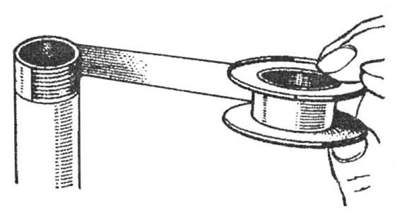
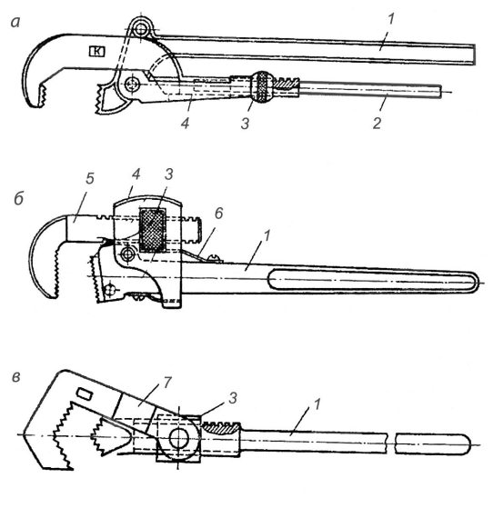

Соединение стальных труб.


Сеть трубопроводов, по которой под определенным давлением перемещаются вода, пар или газ, состоит из отдельных соединенных между собой участков стальных труб. Трубопровод на всем протяжении, в том числе в местах соединений, должен быть прочным, плотным и сохранять свою непроницаемость при удлинении или укорачивании от температурных изменений. Стальные трубы соединяют на резьбе, фланцах и сварке.
Соединение стальных труб на резьбе. Соединительные части изготовляют с цилиндрической резьбой. Для соединения стальных труб на резьбе используют соединительные части (фитинги) из ковкого чугуна и стали. Соединительные части из ковкого чугуна применяют для трубопроводов, по которым проходит вода или пар с температурой не выше 175 °C и давлением до 1,6 МПа при диаметрах условного прохода не более 10 мм и до 1 МПа при диаметрах от 50 до 100 мм. Соединительные части из стали используют для трубопроводов всех диаметров при давлении до 1,6 МПа. Фитинги из ковкого чугуна на концах имеют утолщения-буртики, необходимые для большей прочности. У фитингов из стали на концах нет буртиков.
Фитингами из ковкого чугуна с цилиндрической резьбой для соединения труб по прямой и для заглушки концов являются муфты прямые и переходные, соединительные гайки, футорки, контргайки, пробки.
Для соединения труб под углом и устройства ответвлений применяют следующие фитинги из ковкого чугуна: угольники прямые и переходные, тройники прямые и переходные.
Торцы фитингов должны быть ровными и перпендикулярными к оси соединительной части. Внутренняя и наружная резьбы должны быть чистыми, без заусенцев и срывов резьбы, нарезанными точно по осевым линиям фитингов. Допускаются участки с сорванной резьбой, если их длина в сумме не превышает 10 % длины резьбы.
При резьбовых соединениях, чтобы обеспечить непроницаемость стыка, применяют уплотнительный материал – лен, асбест, натуральную олифу, белила, суриковую и графитную замазку. При цилиндрических резьбовых соединениях труб, по которым транспортируется холодная и горячая вода (температурой до 100 °C), уплотнительным материалом служит льняная прядь, пропитанная суриком или белилами, замешанными на натуральной олифе.
Для трубопроводов с теплоносителем температурой более 100 °C в качестве уплотнительного материала применяют асбестовый шнур вместе с льняной прядью, который пропитывают графитом, замешанным на натуральной олифе. Резьбу вначале промазывают суриком или белилами. На короткую резьбу льняную прядь наматывают со второй нитки от торца трубы по ходу резьбы тонким ровным слоем «врасстилку», без обрыва. Прядь, которая должна быть сухой, необходимо предварительно тщательно рассучить, чтобы волокна хорошо отделялись. Намотанную прядь сверху по ходу резьбы промазывают разведенным суриком. Прядь не должна свисать с конца трубы или входить внутрь трубы, так как это может вызвать засорение трубопровода. Асбестовый шнур со льном наматывают от сбега к началу резьбы, что позволяет более плотно уложить его на резьбе и не сбить при навинчивании фасонной части.
Вместо льна, сурика и олифы для уплотнения резьбовых соединений применяют уплотнительную ленту на основе фторопластов – ленту ФУМ. Эта лента состоит из фторлона 4Д (80–84 %) и вазелинового масла для смазки (16–20 %). Фторлон 4Д стоек ко всем минеральным кислотам, щелочам и другим коррозионным средам. Для уплотнения резьбовых соединений используют ленту шириной 10–15 мм и толщиной 0,08—0,12 мм. Поверхность ленты должна быть ровной, без разрывов и вздутий. По внешнему виду лента белого цвета; допускается наличие небольших оттенков и пятен. Ленту ФУМ применяют при монтаже систем водоснабжения, отопления и газопроводов, а также при монтаже технологических трубопроводов, транспортирующих среду температурой от -50 до 200 °C.

Рис. 17. Уплотнение резьбовых соединений с использованием ленты ФУМ
При использовании ленты ФУМ резьбу предварительно очищают от загрязнения, протирая ее ветошью; затем на резьбу наматывают ленту по направлению резьбы, как показано на рис. 17, после чего навертывают фитинг или арматуру. На трубы диаметром 15–20 мм ленту наматывают в три слоя, а на трубы диаметром 25–32 мм – в четыре слоя. На разъемных соединениях (сгонах) между муфтой и контргайкой наматывают жгут из трех слоев той же ленты. Если резьбовое соединение не обеспечивает герметичности и появляется необходимость замены уплотняющего материала, резьбу нужно хорошо очистить от ленты и заново произвести соединение.
Сваривать трубу следует до уплотнения резьбового соединения лентой ФУМ. Если необходимо выполнить сварной стык после уплотнения резьбового соединения, последнее должно быть расположено не ближе чем на 400 мм от места сварки.
Соединительные части нужно навертывать на трубы до отказа, т. е. так, чтобы они заклинились на последних двух конусных нитках (сбеге) резьбы, чем обеспечивается герметичное соединение.
Кроме короткой резьбы трубы соединяют и на длинной резьбе, применяя сгоны. Стандартные сгоны длиной 110 мм изготовляют для труб диаметром 15 и 20 мм, 130 мм – для труб диаметром 25 и 32 мм и 150 мм – для труб диаметром 35–50 мм. Сгон длиной 300 мм устанавливают на стояках отопления. Компенсирующий сгон длиной 130 мм изготовляют для труб диаметром 15 и 20 мм, сгон длиной 140 мм – для труб диаметром 25 и 32 мм.
Соединяют сгон следующим образом. На длинную резьбу насухо навертывают контргайку и муфту. Свинчивая муфту с длинной резьбы, ее навинчивают до конца короткой резьбы, применяя уплотнительный материал. Затем наматывают у торца муфты по ходу резьбы свитый в жгутик уплотнительный материал, и контргайку плотно подгоняют к муфте.
Жгутик помещается в фаске муфты и препятствует просачиванию воды или пара по резьбе. Если в муфте отсутствует фаска, жгутик уплотнительного материала выдавливается контргайкой и соединение не будет достаточно плотным. Места соединения труб очищают от выступающего уплотнительного материала ножовочным полотном.
Трубы соединяют также с помощью гаек. Для этого на обоих концах соединяемых труб нарезают короткие резьбы и навинчивают на уплотнительный материал штуцера соединительных гаек. Затем, поставив между соприкасающимися плоскостями штуцеров прокладку из тряпочного картона, проваренную в олифе, или паронитовую прокладку, штуцера стягивают накидной гайкой.
При соединении труб с муфтовой арматурой трубы нарезают с уменьшенной короткой резьбой, соответствующей длине резьбы на арматуре.
Водогазопроводные трубы на резьбе соединяют с помощью трубных ключей разных конструкций – рычажных, раздвижных и накидных (рис. 18).
Трубный рычажный ключ состоит из неподвижного рычага, соединенного с подвижным рычагом обоймой. Степень раскрытия губок регулируют гайкой. Ключи изготовляют пяти размеров: 1 для труб диаметром от 15 до 25 мм, 2 – диаметром от 15 до 38 мм, 3 – от 15 до 50 мм, 4 – от 20 до 75 мм и 5 – от 25 до 100 мм.

Рис. 18. Трубные ключи: а – рычажный, б – раздвижной, в – накидной; 1 – неподвижный рычаг; 2 – подвижный рычаг; 3 – гайка; 4 – обойма; 5 – подвижная губка; 6 – пружина; 7 – накидная губка
Раздвижной ключ состоит из рычага, подвижной губки, соединенной с рычагом обоймой. Ключ регулируют по диаметру трубы гайкой. Пружина служит для отжатая вверх подвижной губки.
Трубный накидной ключ состоит из рычага, головки с гайкой, с помощью которой он соединен с рычагом. Такие ключи применяют для свинчивания труб диаметром от 15 до 75 мм.
Трубные ключи требуют тщательного ухода, систематической очистки, смазывания винтов и шарнирных соединений машинным маслом. Не разрешается работать неисправными ключами, в том числе ключами со сработанными губками. Такие ключи при работе соскакивают с труб и могут причинить ушибы и ранения.
Не следует работать ключами, номера которых не соответствуют диаметру свинчиваемых труб, так как при этом ключи быстро становятся непригодными.
Запрещается надевать обрезки труб на рычаги ключей для увеличения силы, прилагаемой к ключам, так как от этого рычаги гнутся и ключи становятся непригодными для работы.
При свинчивании труб для получения надежного заклинивания фасонной части или арматуры на сбеге резьбы не разрешается подавать назад навинченную фасонную часть, чтобы избежать нарушения плотности соединения. Если фасонная часть или арматура не заняла требуемого положения и ее нельзя повернуть по ходу резьбы, то положение можно исправить, разъединив сгоны по обеим сторонам фасонной части или арматуры и придав им требуемое положение; затем сгоны вновь надо соединить. Если это не представляется возможным, нужно разобрать соединение и вновь его собрать, применив новые уплотнительные материалы. Трубы свинчивают в прижимах или на месте монтажа.
Соединение труб на фланцах. Безрезьбовые стальные трубы можно соединять на приваренных к ним фланцах с помощью болтов, которые вставляют в отверстия фланцев. При навинчивании гаек на болты фланцы не должны давать перекоса, поэтому гайки рекомендуется навинчивать не в порядке расположения болтов по окружности, а одну против другой.
Уплотнительным материалом между фланцами служат прокладки. Для трубопровода, предназначенного для холодной или горячей воды (до 100 °C), прокладки изготовляют из тряпичного картона толщиной 3 мм. Вырезанные картонные прокладки смачивают водой и высушивают, чтобы лучше впитывалась олифа, а затем пропитывают горячей олифой в течение 20–30 мин.
Для трубопровода, предназначенного для теплоносителя температурой до 450 °C и давлением до 5 МПа, прокладки изготовляют из паронита. В паропроводах давлением пара до 0,15 МПа для прокладок применяют асбестовый картон толщиной 3–6 мм. Асбестовый картон должен быть плотным и гибким; при сгибании картона под углом 90 ° вокруг цилиндра диаметром 100 мм он не должен ломаться. Асбестовые прокладки смазывают составом из графита, замешанного на натуральной олифе.
Между фланцами располагают одну прокладку. Чтобы прокладка не упиралась наружной кромкой в болты, а внутренней не закрывала отверстия трубы, наружный диаметр ее не должен доходить до болтов, а внутренний – до края трубы на 2–3 мм.
Фланцы соединяют болтами таким образом, чтобы головки всех болтов помещались на одной стороне соединения.
Концы болтов не должны выступать из гаек больше чем на 0,5 диаметра болта. Болты свинчивают простым или разводным гаечным ключом.
Разбирают фланцевые соединения следующим образом. Сначала гаечными или трубными ключами последовательно развинчивают гайки и вынимают болты. Если болты заржавели и свободно не вынимаются, их выколачивают ударами молотка по деревянной подкладке, поставленной на конец болта, чтобы не повредить резьбу. Негодную прокладку срубают зубилом. При разборке фланцев необходимо соблюдать меры предосторожности, чтобы освобожденная деталь не упала на ноги работающего.